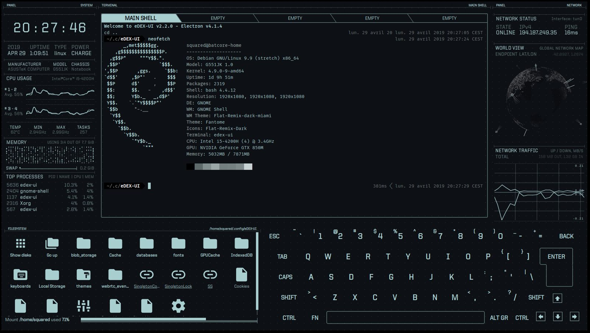

References / Software / 418
eDEX-UI terminal emulator
An open-source science-fiction terminal emulator that wraps a real shell in heads-up-display panels: a clock, system graphs, a wireframe globe, and an on-screen keyboard, all in hairline cyan on near-black.
- Source
- GitHub: GitSquared/edex-ui
- Creator
- Gabriel Saillard (GitSquared) and contributors
- Made
- 2017–2021 (screenshot of version 2.2, April 2019)
- Style
- Cyberpunk (agent-proposed, not yet reviewed by a person)
- Moods
- High-tech, nocturnal, tense
- Evidence
- Downloaded and inspected
media/screenshot_default.png(1934 × 1094 px) from the repository’s master branch, the screenshot the README captions “neofetch on eDEX-UI 2.2 with the default "tron" theme & QWERTY keyboard”. Also inspected the “blade” theme screenshot (3840 × 2160 px), which uses orange instead of cyan. - Reviewed
- Rights
- Open license, stored. License: GPL-3.0. Rights policy
Context
The GitHub repository describes eDEX-UI as “a cross-platform, customizable science fiction terminal emulator with advanced monitoring & touchscreen support”. It was created in January 2017 and archived in October 2021. GitHub.
The README says the project is “heavily inspired from the TRON Legacy movie effects (especially the Board Room sequence)” and began as a distributable version of Seena Burns’s DEX-UI. README.
The repository is licensed GPL-3.0. It ships several themes, including “tron”, “blade”, “matrix”, and “tron-disrupted”, which adds glitch effects. GitHub.
Observed
- The ground is near-black blue-gray. All text, lines, and icons are one pale cyan-gray, with a brighter white for active text.
- The screen divides into labelled panels: “PANEL SYSTEM”, “TERMINAL MAIN SHELL”, “PANEL NETWORK”, and “FILESYSTEM”. Each label is small capitals with a thin rule under it.
- A large clock reads “20 : 27 : 46” in a squared sans-serif. Below it sit uptime, CPU graphs with “#1-2 Avg. 55%”, temperature, memory as a dot matrix, and a process table.
- The central terminal has tabs with diagonal cut edges (“MAIN SHELL”, “EMPTY”) and shows monospace shell output with ASCII art.
- A dotted wireframe globe titled “WORLD VIEW / GLOBAL NETWORK MAP” and a network-traffic line chart fill the right column.
- An on-screen keyboard of outlined keys fills the lower right. Frames are 1 px lines with square corners.
Why it belongs
The interface is the HUD branch of the style without the neon city: one cool hue, many small labelled readouts, and type that is all data. It shows that the look can work as a single-color system.
Its source is film interface design (TRON: Legacy), which ties it to the screen graphics of the genre more than to its street imagery.
Borrow
Put a small capital label and a right-aligned category over a 1 px rule at the top of every panel.
Use one pale cyan for all lines and text, and show state with brightness, not with more colors.
Cut the corners of tabs on the diagonal to suggest a HUD without rounding anything.
Measured
Machine-extracted by tools/image-traits.py on . Full measurement.
- Mean chroma
- 0.04
- Palette
- #0d1015 81%
- #2c3539 6%
- #181c21 4%
- #3b474b 2%
- #020203 2%
- #4e5d61 1%
- #aacfd0 1%
- #64777a 1%

